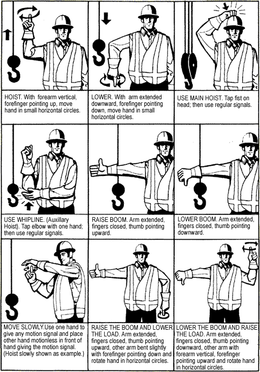
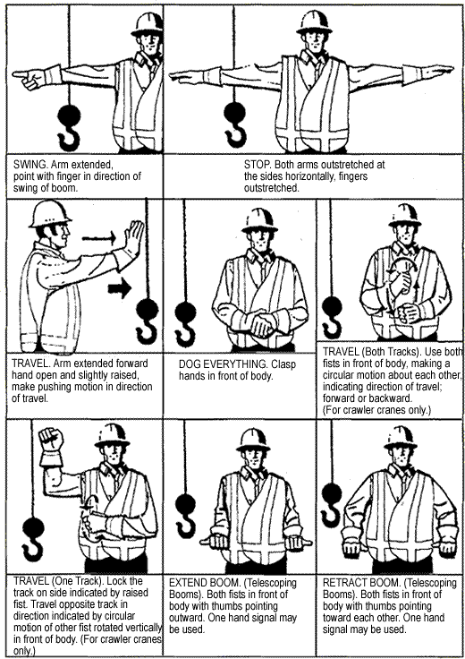
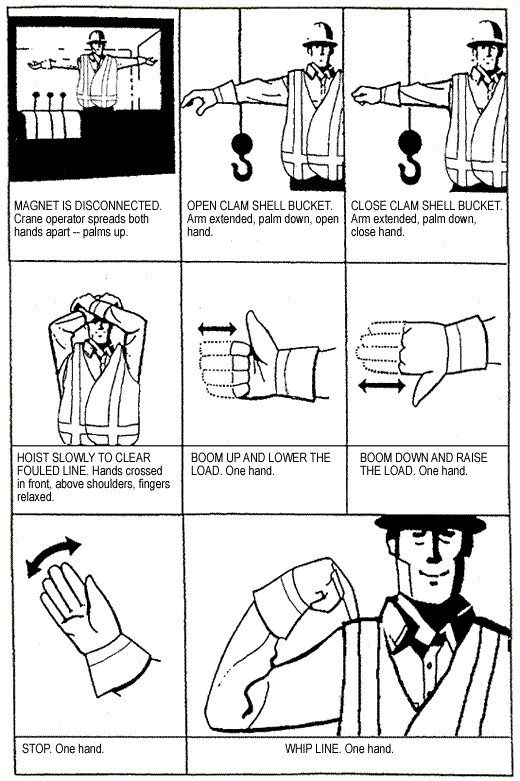
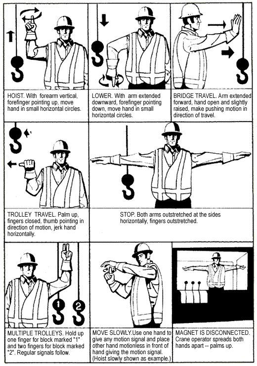
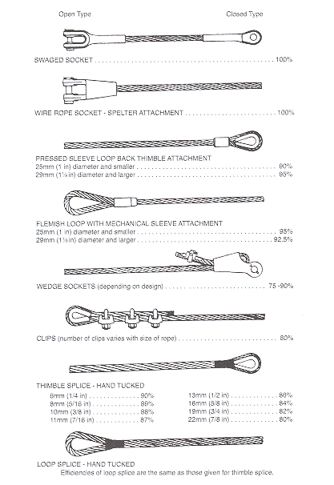
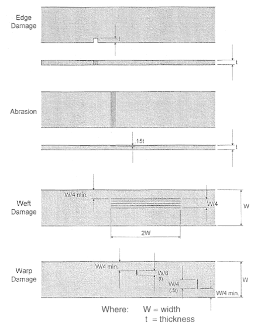

Contents
15.1 Definitions
GENERAL REQUIREMENTS
15.2 Qualified riggers
15.3 Detaching loads
15.4 Use of rigging
15.5 Component identification
15.6 Design factors
Table 15-1: Minimum Design Factors for Rigging
15.7 Wire rope on mobile cranes
15.8 Natural fibre rope
15.9 Wedge socket connections
15.10 Open hook restriction
15.11 Securing pins
15.12 Replacing pins
15.13 Wire rope lubrication [Repealed]
15.14 Securing ropes to drums
15.15 Wraps required
15.16 Reeving lines
15.17 Sheaves
15.18 Guylines
15.19 Spooling rope
15.20 Hand signals
Figure 15-1: Standard hand signals for controlling crane operations- Crawler, locomotive and truck cranes
15.21 Termination efficiencies
Figure 15-2: Termination efficiencies
15.22 Wire rope clips
15.23 Wire rope splices
Table 15-2: Installation and use of wire rope clips
15.24 Restriction on fold back eyes
15.25 Wire rope rejection criteria
15.26 Nonrotating wire rope
15.27 Contact with electric arc
15.28 Welding
15.29 Hook rejection criteria
SLINGS
15.30 Standards
15.31 Inspection before use
15.32 Makeshift fitting prohibition
15.33 WLL of slings
15.34 Sling angles
Table 15-3: WLL reductions for slings at an angle
15.35 Adverse conditions [Repealed]
15.36 Proof-testing slings
15.37 Storage
15.38 Knots
15.39 Sharp edges
15.40 Slinging loads
15.41 Multiple piece lifts
WIRE ROPE SLINGS
15.42 Sling identification
15.43 Rejection criteria
15.44 Prohibited slings
15.45 Temperature restrictions
ALLOY STEEL CHAIN SLINGS
15.46 Sling identification
15.47 Chain for hoisting
15.48 Chain removal criteria
15.49 Chain wear
Table 15-4: Allowable chain wear
15.50 Periodic inspection
15.51 Temperature restriction
SYNTHETIC WEB SLINGS
15.52 Sling identification
15.53 Temperature restriction
15.54 Synthetic web sling rejection criteria
Figure 15-3: Examples of synthetic web sling rejection criteria
METAL MESH SLINGS
15.55 Sling identification
15.56 Rejection criteria
BELOW-THE-HOOK LIFTING DEVICES
15.57 Standards
15.58 WLL
15.59 Identification
15.60 Part of lifted load
Rigging Definitions
15.1 Definitions
In this Part
"design factor" means the theoretical reserve capability of a product, usually determined by dividing the breaking strength by the working load limit;
"proof test" means a test applied to a product to determine material or manufacturing defects;
"rigging" means fibre ropes, wire ropes, chains, slings, attachments, connecting fittings and associated components;
"working load limit" or "WLL" Repealed. [B.C. Reg. 312/2003, effective October 29, 2003.]
[Amended by B.C. 312/2003, effective October 29, 2003.]
General Requirements
15.2 Qualified riggers
Rigging and slinging work must be done by or under the direct supervision of qualified workers familiar with the rigging to be used and with the code of signals authorized by the Board for controlling hoisting operations.
15.3 Detaching loads
Loads to be unhooked by a worker must be safely landed and supported before the rigging is detached.
15.4 Use of rigging
(1) Repealed. [B.C. Reg. 312/2003, effective October 29, 2003.]
(2) The load applied to any rigging or rigging assembly must not exceed the working load limit.
[Amended by B.C. Reg. 312/2003, effective October 29, 2003.]
15.5 Component identification
(1) Rigging fittings must be marked with the manufacturer's identification, product identifier and the working load limit or sufficient information to readily determine the WLL.
(2) The WLL of existing fittings not identified as specified in subsection (1) must be determined by a qualified person, marked on the fitting and such fittings must be removed from service by January 1, 2001.
15.6 Design factors
(1) The design factors based on breaking strengths for rigging components must be at least equal to the values given in Table 15-1, except as otherwise specified in this Regulation.
| Item | Component | Minimum design factor |
|---|---|---|
| 1 | Nylon fibre rope sling | 5 |
| 2 | Polyester rope sling | 5 |
| 3 | Polypropylene rope sling | 5 |
| 4 | Alloy steel chain sling | 4 |
| 5 | Wire rope sling | 5 |
| 6 | Metal mesh sling | 5 |
| 7 | Synthetic web sling | 5 |
| 8 | Synthetic roundsling | 5 |
| 9 | Chain fittings | 4 |
| 10 | Wire rope sling fittings | 5 |
| 11 | Other fittings | as specified by manufacturer |
| 12 | Non-rotating wire rope | as specified by manufacturer but not less than 5 |
| 13 | Conventional wire rope | 5 |
(2) The design factors specified by subsection (1) may be reduced for a dedicated rigging assembly designed and certified by a professional engineer for a specific lift, but the dedicated assembly must be re-rated according to the requirements of subsection (1) for continued use.
(3) The design factor for any rigging assembly used to support workers must be at least 10.
[Amended by B.C. Reg. 312/2010, effective February 1, 2011.]
15.7 Wire rope on mobile cranes
The minimum design factor based on breaking strength for wire rope on a mobile crane, unless otherwise specified by the crane or wire rope manufacturer, is
(a) for conventional wire rope
(i) 2.5 for pendant lines, 3 for boom hoist reeving and 3.5 for load lines, during erection, and
(ii) 3 for pendant lines, 3.5 for boom hoist reeving and 3.5 for load lines, at all times except during erection, and
(b) 5 for wire rope of nonrotating construction.
15.8 Natural fibre rope
Natural fibre rope must not be used for hoisting with a powered hoist.
15.9 Wedge socket connections
If a wedge socket is used as a wire rope termination, the dead end of the rope must be secured to prevent release of the wedge or rope slippage at the socket.
[Amended by B.C. Reg. 381/2004, effective January 1, 2005.]
[Amended by B.C. Reg. 312/2010, effective February 1, 2011.]
15.10 Open hook restriction
(1) A hook must have a safety latch or other means that will retain slings, chains, or other similar parts, under slack conditions.
(2) A hook used in an application where manipulation of a safety latch or other retaining means may cause a hazard to a worker or where there is no hazard to a worker if the load becomes dislodged is exempt from the requirements of subsection (1).
15.11 Securing pins
(1) A shackle-pin, heel-pin and similar device must be secured against dislodgement.
(2) The pin in a screw-pin type shackle must be wired or otherwise secured against rotation when used in applications that may cause the pin to loosen.
15.12 Replacing pins
A shackle-pin must not be replaced with a bolt or other makeshift fitting.
15.13 Wire rope lubrication
Repealed. [B.C. Reg. 312/2003, effective October 29, 2003.]
15.14 Securing ropes to drums
(1) A rope must be secured to its winding drum, unless the line is required to automatically disengage from the drum.
(2) A rope must not be fastened to a drum by a knot tied in the rope.
15.15 Wraps required
At least 2 full wraps of rope must remain on winding drums when the load hook is in the lowest position.
15.16 Reeving lines
Pulling and pulled lines must be connected by a suitable splice, or a cable pulling sock must fully enclose both line ends whenever a worker may be endangered by failure of the connection between the two lines while reeving lines through sheaves or blocks.
15.17 Sheaves
A sheave must
(a) be correctly sized for the rope,
(b) have a device to retain the rope within the groove, and
(c) be removed from service if it has a damaged groove or flange.
15.18 Guylines
(1) The strength of each guyline and its anchor must exceed the breaking strength of the load-line rigging arrangement.
(2) A guyline anchor must be placed so that the interior angle, between the guyline and the horizontal plane, does not exceed 45°.
(3) Guylines must be arranged so that the hoisting line pull in any direction is shared by 2 or more guys.
(4) Guylines and anchor systems, if certified by a professional engineer, may deviate from the requirements of subsections (1) to (3).
15.19 Spooling rope
(1) Repealed. [B.C. Reg. 312/2003, effective October 29, 2003.]
(2) Except as provided in subsection (3), workers must not use their hands or feet or any hand held object to guide the rope when spooling the rope onto a drum.
(3) In an emergency a steel guide bar of acceptable design may be used to guide the rope onto the drum, but the line speed must be kept as low as practicable and the worker must be positioned to be clear of the drum.
[Amended by B.C. Reg. 312/2003, effective October 29, 2003.]
15.20 Hand signals
If hand signals are used between a signaller and the operator of a crane or hoist to control hoisting operations, the signals shown in Figure 15-1 must be used.
Figure 15-1:
Standard hand signals for controlling crane operations — crawler, locomotive and truck cranes

Figure 15-1 (continued):
Standard hand signals for controlling crane operations — crawler, locomotive and truck cranes

Figure 15-1 (continued):
Standard hand signals for controlling crane operations — crawler, locomotive and truck cranes

Figure 15-1 (continued):
Standard hand signals for controlling crane operations — overhead and gantry cranes

15.21 Termination efficiencies
The working load limit must be reduced in accordance with the efficiency rating for the type of termination specified in Figure 15-2, unless otherwise permitted by the manufacturer.
Figure 15-2: Termination efficiencies

15.22 Wire rope clips
(1) Repealed. [B.C. Reg. 312/2003, effective October 29, 2003.]
(2) If the manufacturer's specifications for installing and using wire rope clips cannot be determined, the number of clips and the installation torque must be as shown in Table 15-2.
(3) The U-bolt part of a wire rope clip must be installed so that it bears on the unloaded end of the wire rope.
(4) Malleable cast iron wire rope clips must not be used for hoisting or other critical applications unless approved by the manufacturer for that purpose.
[Amended by B.C. Reg. 312/2003, effective October 29, 2003.]
15.23 Wire rope splices
(1) A turnback eye splice made using wire rope clips must use the number of clips
(a) specified by the manufacturer for each turnback eye termination, or
(b) if not specified by the manufacturer, specified in Table 15-2.
(2) A lap splice made using wire rope clips must use double the number of clips
(a) specified by the manufacturer for a turnback eye termination, or
(b) if not specified by the manufacturer, specified in Table 15-2.
Table 15-2: Installation and use of wire rope clips
| Diameter of rope | Number of clips | Spacing between clips (centre to centre) | Torque | |||
|---|---|---|---|---|---|---|
| millimetres | inches | millimetres | inches | newton metres |
foot pounds |
|
| 6 | 1/4 | 2 | 38 | 1 1/2 | 20 | 15 |
| 8 | 5/16 | 2 | 51 | 2 | 41 | 30 |
| 10 | 3/8 | 2 | 57 | 2 1/4 | 61 | 45 |
| 11 | 7/16 | 2 | 64 | 2 1/2 | 88 | 65 |
| 13 | 1/2 | 3 | 76 | 3 | 88 | 65 |
| 16 | 5/8 | 3 | 102 | 4 | 129 | 95 |
| 19 | 3/4 | 4 | 114 | 4 1/2 | 176 | 130 |
| 22 | 7/8 | 4 | 133 | 5 1/4 | 305 | 225 |
| 25 | 1 | 4 | 152 | 6 | 305 | 225 |
| 29 | 1 1/8 | 5 | 178 | 7 | 305 | 225 |
| 32 | 1 1/4 | 5 | 203 | 8 | 488 | 360 |
| 38 | 1 1/2 | 6 | 229 | 9 | 488 | 360 |
| 44 | 1 3/4 | 7 | 267 | 10 1/2 | 630 | 465 |
| 51 | 2 | 8 | 305 | 12 | 881 | 650 |
| 54 | 2 1/8 | 8 | 330 | 13 | 881 | 650 |
| 57 | 2 1/4 | 8 | 356 | 14 | 881 | 650 |
[Amended by B.C. Reg. 188/2011, effective February 1, 2012.]
15.24 Restriction on fold back eyes
(1) A wire rope termination using a swaged fold back eye must be identified with a serial number or other unique identification code, proof tested before being placed in service, and a record of the proof test kept available for the service life of the termination.
(2) Repealed. [B.C. Reg. 312/2003, effective October 29, 2003.]
(3) A swaged fold back eye termination must be identified with the WLL as required by section 15.42.
[Amended by B.C. Reg. 312/2003, effective October 29, 2003.]
15.25 Wire rope rejection criteria
Wire rope must be permanently removed from service if
(a) in running wire ropes, there are 6 or more randomly distributed wires broken in one rope lay or 3 or more wires are broken in one strand in one lay,
(b) in stationary wire ropes, such as guylines, there are 3 or more broken wires in one lay in sections between end connections, or more than one broken wire within one lay of an end connection,
(c) wear, or the effects of corrosion, exceed 1/3 of the original diameter of outside individual wires,
(d) there is evidence of kinking, bird-caging or any other damage resulting in distortion of the rope structure,
(e) there is evidence of heat or arc damage, or
(f) there are reductions of normal rope diameter, from any cause, in excess of
(i) 0.4 mm (1/64 in) for diameters up to and including 8 mm (5/16 in),
(ii) 1 mm (3/64 in) for diameters greater than 8 mm (5/16 in) up to and including 19 mm (3/4 in),
(iii) 2 mm (1/16 in) for diameters greater than 19 mm (3/4 in) up to and including 29 mm (1 1/8 in), or
(iv) 3 mm (3/32 in) for diameters greater than 29 mm (1 1/8 in).
15.26 Nonrotating wire rope
Wire rope with nonrotating construction must be removed from service if
(a) the rejection criteria in section 15.25 are met,
(b) there are 2 randomly distributed broken wires in 6 rope diameters, or
(c) there are 4 randomly distributed broken wires in 30 rope diameters.
15.27 Contact with electric arc
A rigging component or a wire rope that has been contacted by an electric arc must be removed from service until certified safe for continued use by a professional engineer.
15.28 Welding
(1) Rigging and fittings which have been repaired by welding must not be placed in service until certified safe for continued use by a professional engineer.
(2) Alloy steel chain must not be welded or annealed.
15.29 Hook rejection criteria
A worn or damaged hook must be permanently removed from service if
(a) the throat opening, measured at the narrowest point, has increased by more than 15% of the original opening,
(b) the hook has twisted more than 10° from the original plane of the hook,
(c) the hook has lost 10% or more of its cross-sectional area,
(d) the hook is cracked or otherwise defective, or
(e) wear or damage exceeds any criteria specified by the manufacturer.
Slings
15.30 Standards
Unless otherwise required by this Regulation, wire rope, alloy steel chain, metal mesh, synthetic fibre rope, synthetic roundslings and synthetic fibre web slings must meet the requirements of ASME B30.9-2006 Slings.
[Enacted by B.C. Reg. 312/2003, effective October 29, 2003.]
[Amended by B.C. Reg. 312/2010, effective February 1, 2011.]
15.31 Inspection before use
Slings and attachments must be visually inspected before use on each shift, and defective equipment must be immediately removed from service.
15.32 Makeshift fitting prohibition
Makeshift couplers, shorteners, hooks or other load bearing attachments for slings, including those made from concrete reinforcing steel, must not be used unless the working load limit has been determined and certified by a professional engineer.
15.33 WLL of slings
(1) The determination of the working load limit of a sling assembly must ensure that the WLL of any individual component of the assembly is not exceeded.
(2) The WLL of a sling with more than 3 legs is limited to the WLL of any 3 legs of the sling.
(3) The load carried by any single leg of a bridle sling must not be greater than the WLL of the leg.
15.34 Sling angles
If a sling is used to lift at any angle from the vertical
(a) the design factors required by this Part must be maintained, and
(b) a qualified person or the manufacturer must determine the required reduction of the WLL of the sling, or it must be reduced according to Table 15-3.
Table 15-3: WLL reductions for slings at an angle
| Angle between the sling leg and vertical | Reduce WLL to |
|---|---|
| up to 30° | 90% |
| over 30° up to 45° | 70% |
| over 45° up to 60° | 50% |
| over 60° | not permitted unless part of an engineered lift |
15.35 Adverse conditions
Repealed. [B.C. Reg. 312/2003, effective October 29, 2003.]
15.36 Proof-testing slings
Before being placed in service any new, repaired or altered sling having welded couplers or other welded load bearing attachments must be proof tested by the manufacturer, or the manufacturer's representative or an agency acceptable to the Board in the manner specified by the manufacturer.
15.37 Storage
A sling must be stored to prevent damage when not in use.
15.38 Knots
A sling with a knot must not be used.
15.39 Sharp edges
When a sling is applied to a sharp edge of a load, the edge or the sling must be protected to prevent damage to the sling.
15.40 Slinging loads
(1) A sling must be selected and used to prevent slipping or overstressing the sling or the load.
(2) A load consisting of 2 or more pieces of material over 3 m (10 ft) long must be slung using a 2 legged sling arrangement positioned to keep the load horizontal during the lift, and each sling must be choked around the load with a double wrap.
15.41 Multiple piece lifts
For a multiple piece lift
(a) each member of the lift that is being delivered to a different spot must be independently slung back to the main load hook or master link using graduated length slings,
(b) a lifted member must not support another lifted member, and
(c) a crane with power controlled lowering must be used.
Wire Rope Slings
15.42 Sling identification
A wire rope sling with a swaged or poured socket or a pressed fitting must be permanently identified with
(a) its working load limit,
(b) the angle upon which the WLL is based, and
(c) the name or mark of the sling manufacturer.
15.43 Rejection criteria
(1) A wire rope sling must be permanently removed from service when the applicable rejection criteria of section 15.25 are found.
(2) A sling with damaged end fittings must not be used.
15.44 Prohibited slings
Wire rope of nonrotating type construction or of Lang's lay type construction must not be used in a sling.
15.45 Temperature restrictions
(1) A wire core rope sling must not be exposed to or used at a temperature above 205°C (400°F) unless otherwise specified by the manufacturer.
(2) A fibre core wire rope sling must not be exposed to or used at a temperature above 100°C (212°F) unless otherwise specified by the manufacturer.
Alloy Steel Chain Slings
15.46 Sling identification
An alloy steel chain sling must be permanently identified with
(a) the size,
(b) the manufacturer's grade and the WLL,
(c) the length and number of legs, and
(d) the name or mark of the sling manufacturer.
15.47 Chain for hoisting
(1) Chain used for hoisting must be approved by the chain manufacturer for hoisting.
(2) Proof coil and transport chain must not be used for hoisting.
15.48 Chain removal criteria
A chain sling must be permanently removed from service or repaired by a qualified person to the original manufacturer's specification or to the specifications of a professional engineer if the chain has defects such as stretch or deformation, cracks, nicks or gouges, corrosion pits or burned links.
15.49 Chain wear
(1) A chain sling must be permanently removed from service when the chain link wear is more than the maximum allowed by the manufacturer.
(2) If the manufacturer does not specify removal criteria for use in subsection (1), the chain must be permanently removed from service when the chain size at any point of the link is reduced to the values given in Table 15-4.
Table 15-4: Allowable chain wear
| Chain size | Minimum allowable chain size at any point of link | ||
|---|---|---|---|
| millimetres | inches | millimetres | inches |
| 6.3 | 1/4 | 5.9 | 15/64 |
| 10 | 3/8 | 8 | 19/64 |
| 13 | 1/2 | 10 | 25/64 |
| 16 | 5/8 | 12 | 31/64 |
| 19 | 3/4 | 15 | 19/32 |
| 22 | 7/8 | 18 | 45/64 |
| 25 | 1 | 21 | 13/16 |
| 29 | 1 1/8 | 23 | 29/32 |
| 32 | 1 1/4 | 25 | 1 |
| 35 | 1 3/8 | 28 | 1 3/32 |
| 38 | 1 1/2 | 30 | 1 3/16 |
| 44 | 1 3/4 | 36 | 1 13/32 |
15.50 Periodic inspection
A chain sling must be thoroughly inspected at least once each year and a record of the inspection must be kept.
15.51 Temperature restriction
A chain sling must not be exposed to a temperature above 260°C (500°F) unless otherwise permitted by the manufacturer.
Synthetic Web Slings
15.52 Sling identification
Synthetic fibre web slings must be permanently identified with the
(a) manufacturer's name or mark,
(b) manufacturer's code or stock number,
(c) working load limits for the types of hitches permitted, and
(d) type of synthetic web material.
15.53 Temperature restriction
Synthetic fibre web slings must not be exposed to a temperature above 82°C (180°F) unless otherwise permitted by the manufacturer.
15.54 Synthetic web sling rejection criteria
A synthetic fibre web sling must be removed from service when any of the following circumstances occurs:
(a) the length of an edge cut exceeds the web thickness;
(b) the penetration of abrasion exceeds 15% of the webbing thickness taken as a proportion of all plies;
(c) abrasion occurs on both sides of the webbing and the sum of the abrasion on both sides exceeds 15% of the webbing thickness taken as a proportion of all plies;
(d) warp thread damage up to 50% of the sling thickness extends to within 1/4 of the sling width of the edge or exceeds 1/4 the width of the sling;
(e) warp thread damage to the full depth of the sling thickness extends to within 1/4 of the sling width of the edge or the width of damage exceeds 1/8 the width of the sling;
(f) weft thread damage allows warp thread separation exceeding 1/4 the width of the sling and extends in length more than twice the sling width;
(g) any part of the sling is melted or charred, or is damaged by acid or caustic;
(h) stitches in load bearing splices are broken or worn;
(i) end fittings are excessively pitted or corroded, cracked, distorted or broken;
(j) a combination of the above types of damage of approximately equal total effect are present.
Figure 15-3: Examples of synthetic web sling rejection criteria

Metal Mesh Slings
15.55 Sling identification
A metal mesh sling must be permanently identified with
(a) the manufacturer's name or mark, and
(b) the WLL for vertical basket hitch and choker hitch configurations.
15.56 Rejection criteria
A metal mesh sling must be removed from service if any of the following damage is visible:
(a) a broken weld or a broken brazed joint along the sling edge;
(b) a broken wire in any part of the mesh;
(c) reduction in wire diameter of 25% due to abrasion or 15% due to corrosion;
(d) lack of flexibility due to distortion of the mesh;
(e) distortion of the choker fitting so that the depth of the slot is increased by more than 10%;
(f) distortion of either end fitting so that the width of the eye opening is decreased by more than 10%;
(g) a 15% reduction of the original cross-sectional area of metal at any point around the hook opening or end fitting;
(h) visible distortion of either end fitting;
(i) a cracked end fitting.
Below-the-Hook Lifting Devices
15.57 Standards
Spreader bars and other specialized below-the-hook lifting devices must be constructed, inspected, installed, tested, maintained and operated according to the requirements of ASME B30.20-1993, Below-the-Hook Lifting Devices.
[Amended by B.C. Reg. 312/2003, effective October 29, 2003.]
15.58 WLL
Spreader bars and other specialized below-the-hook lifting devices must have their working load limit certified by a professional engineer or established by the lifting device manufacturer.
15.59 Identification
A nameplate or other permanent marking must be on a spreader bar or specialized below-the-hook lifting device and display the
(a) manufacturer's name and address,
(b) serial number,
(c) weight of the device, if more than 45 kg (100 lbs), and
(d) working load limit.
15.60 Part of lifted load
A spreader bar and any other specialized below-the-hook lifting device must be considered part of the lifted load.